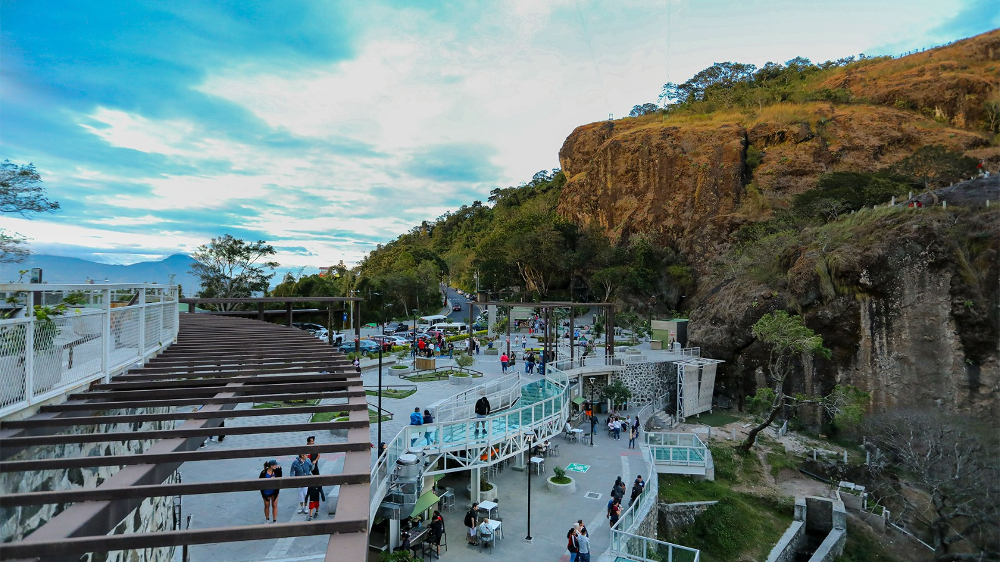

Un mirador natural lleno de leyendas
La Puerta del Diablo es uno de los miradores naturales más conocidos de El Salvador. Se encuentra en el municipio de Panchimalco, a pocos kilómetros de San Salvador, y es famoso por sus formaciones rocosas y sus impresionantes vistas panorámicas.
Su nombre proviene de una antigua leyenda popular que cuenta que en el lugar apareció el diablo durante una celebración en tiempos coloniales. Con el paso de los años, el sitio se convirtió en un punto turístico muy visitado por viajeros y habitantes locales.
Actualmente es un destino ideal para caminatas, fotografía y actividades al aire libre. Desde sus miradores se pueden observar montañas, valles y parte del paisaje del centro del país.
